Engineering Projects

8/21/23 - 8/24/23 Week1
This week in Engineering I learned about saftey.
I learned to always wear saftey glasses and don't wear loose
clothing. I learned about OSHA and how it is the Satey organization
for engineering. I learned how to use AWS and how to code for it.
Finally, I learned about Github and how to make it work.
8/21/23 - Week 2
This week in Engeneering I learned how to keep myself safe. I also learned how to use Tinkercad. I made a basketball court for my project. My groupmates and I created our project to scale. I learned how to use Tinkercad well. 9/05/23 9/08/23 Week 3This week in Engineering I learned how to build my project. We began building and cutting the cardboard. We overcame some problems. We also used our drawing of our project. We used it to help us build.
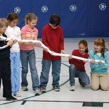Week 4 (9/11-9/15)
This week in engineering I finished my project. My team and I overcame challenges together. We were able to pop the balloon. Our project was a success. I also learned how important planning ahead is. Before starting our project we planned it. It was a fun experience. I also learned how important accuate dimensions are.
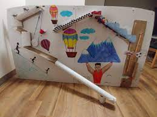Week 5(9/18-9/22)
This week in engeneering we talked about computer sceince. We also did challenges. We did two challenges, a boat flotation device and the letter "E". I enjoyed the boat floatation challenge more. It was a fun experience and I was interested to see how long my boat could float for. The paper "E" challenge was fun too. I was able to successfully draw and cut out another persons E.
Week 6 (9/25-9/29)
This week in engineering I learned about computer parts
My partner and I picked a computer apart. We opened it
and saw the cool parts. We put the parts out then put
them back in. It worked so we did it correctly. I also
did a worksheet where I colored the parts of a computer.
Overall, this week I learned a lot about computers.
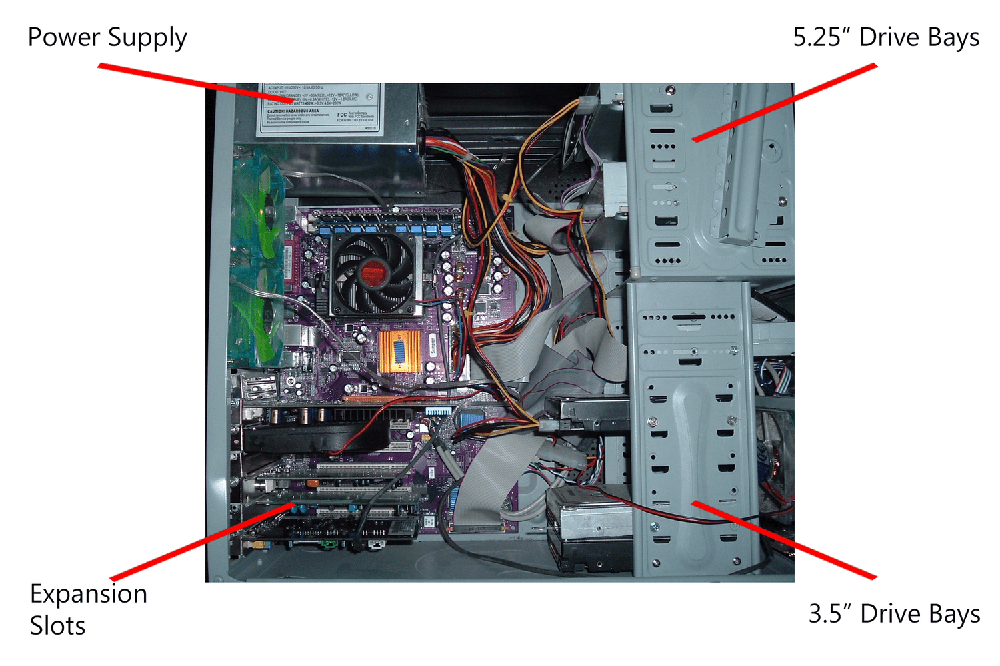Week 7 (10/2-10/6)
This week in engineering I learned about bio engineering.
I learned about prosthetics and even made my own. I
made my own prosthetic arm using cardboard. There were
multiple difficulties such as the fingers not grabbing
the water bottle. We had to make it as good as we could.
I also made a prosthetic on tinkercad for a dog's leg.
I researched how the prosthetic needs to connect to the dog.
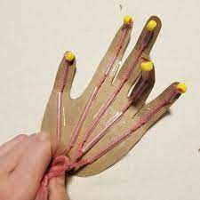Week 8 (10/9-10/13)
This week in engineering I learned about Aerospace
Engineering. I learned about the different types of it.
I also designed a rocket on Tinkercad. I was stuck at first
and didn't know how to begin. After thinking deeply about it,
I was able to figure out a design. My group combined all of
our designs together.

Week 9 (10/16-10/20)
This week in engineering I learned a lot. I learned
more about aerospace engineering and how it has much to do
with space. The topic interests me and I find how it works cool.
Our test project went well since we took time with it.
We didn't use that much water which was a mistake.
If we could do it again we would've used more
water.

Week 10 (10/23-10/27)
This week in Engineering I learned about environmental
engineering. The water clearing project was fun. We
were able to make the water pretty clear by taking time on it.We used the
materials in a good order. We also had the water go through
multiple times. That was very helpful with making the water
as clear as possible.

Week 11 (10/30-11/3)
This week in Engineering I learned about many things.
I learned about Ohm's law. At first it was confusing
but eventually got easier. The formulas I needed being
on the worksheet helped a lot. The Ohm's law equation is
V=IR. I learned that electrical engineering is any form
of engineering involed with the study, designing, and use
of appliances and equipment which use any form of electricity.
I also had hands on experience with electricity.
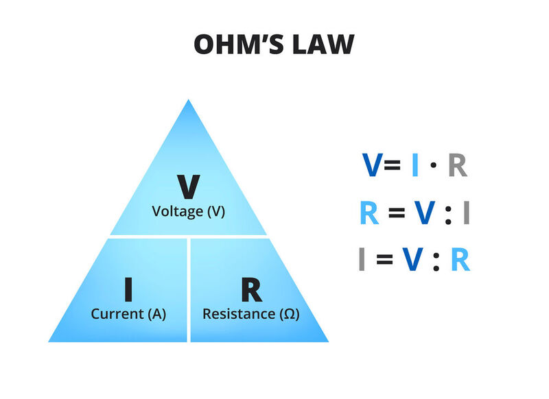Week 12 (11/6-11/10)
This week in Engeneering I had fun and did hands on activites.
I did 2 labs this week with my group. For me, the labs were difficult
at first. My parter helped me figure it out and I was able to finish it.
I learned a lot during the circit multimeter challege, especially about
math. I had done those equations in the past so that experience helped me.
I prefer doing more hands on activites like we did since it helps me learn
\the easiest.
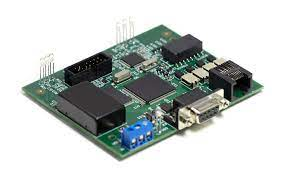Week 13 (11/13-11/17)
This week in Engeneering I learned much about business engeneering. So far,
I have found the most intrest in this type of engineering. For my group's
Shark Tank project, we decided on making recyclrates. Recylarates are a
ball filled with nutrients. We came up with other ideas aswell but this
was the best one in our opinion. Recyclates would be very helpful for
poorer places. They arent expensive and can be a full meal.

Week 14 (11/27-12/1)
During this week, I researched information about our pitch. We searched
many topics, such as, price, profit, and other possible problems.
FOr the price, we had worries for if it would be too expensive. We found
out if we used cheeper materials it would work out with us making a good
profit. But, so we could make profit, we had to make the price higher than
what it costs us to make the Recyclates. Our group had these conversations
and although we went through some disagreements, we found out agreements.
My favorite pitch was Nazeli's miracle maskera because of how unique it was.
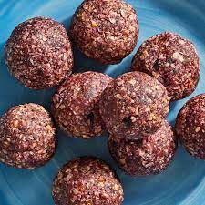Week 15 (12/4-12/8)
I am reffering to the bridge I worked on, 57.4g, for the next questions.
<4i>4. The parts that contributed to the bulk of the weight in our bridge were 2 points that were near the center. We trippled the layering of pasta there.We did it to keep the weight from the string from the bucket. <5i>5. The insperation for our design came from our imaginations. I wanted it to be reliable. <6i>6.The design didn't work as we intended it to. It lacked support and layering. <7i>7.The point of failure in our bridge was it's lack of thickness and streamlined design. If we could change just one of those, we would be <7i>able to add another cup of water. <8i>A big way to improve and fix our bridge is to add arches/some type of vertical support. We should've crossed the spagetti so it wouldn't break.
Semester 2
Week 1 1/8-1/12
From the chemical engineering slides, I learned chemical engeneering has
a variety of feilds, such as, oil exploration, Nanotechnology, and Metallurgy.
I learned Nanotechnology is the manipulation of matter on a near-atomic scale.
I also learned oil exploration is a search for petroleum. From the Oobleck
project, I learned you shouldn't add too much water. That was the most important
part, as we put too much and it became too liquidy. The cornstarch and water
watermixed pretty well overall. The project was fun and a good learning experience.
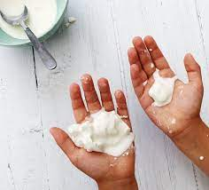Semester 2
Week 2 1/15-1/19
In engineering this week for our project we researched a lot about potential
ideas, designs,techniques, and more. For our design, we are thinking about
using four small CDs for the wheels. Our research led us to learning smaller
wheels are faster. We are going to ues the cardboard as our base since that
would be the smartest use for it. From the mosuetrap video, I got many ideas
that we could use for our car. We researched more about other people making
mouse trap cars. We used that information to learn from errors other people made.
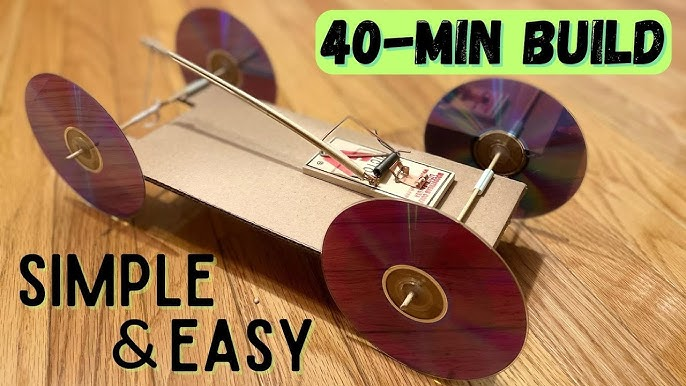Semester 2
Week 3 1/22-1/26
Our design is going well since we finished all the calculations. At first,
my partner and I were confused but we got help from you and our classmates
and we figured it out. This week, we are planning on drawing out our car.
since we are finished with the calculations. We are also going to cut it out
and use the exact measurements we calculated. I also made sure the tinkercad
is 100% accurate.
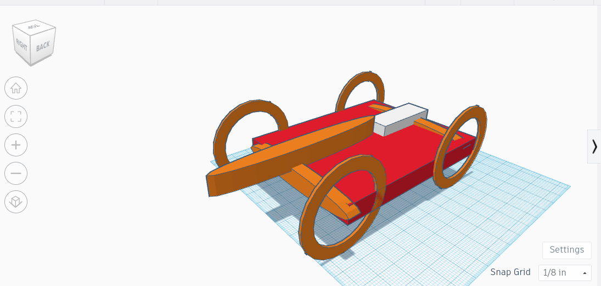Semester 2
Week 4 1/9-2/2
We worked on making our wheels rotate and tried different methods. First, we
didn't use a straw which caused our wheels to not rotate. Then we put the straw
in and it helped the wheels rotate so now our car moves. Our wheels are stable
and have good support from the tape and hot glue. Our base is sturdy and we
recently put the mousetrap on. This week, we are planning on making our car go
as far as possible. Currently, we are in a problem since our car isn't moving
as well as we want it to. The wheels have recently been getting weaker. Therefore,
our goal for this upcoming week is to overcome these problems. Our measurement sheet
has been a big help, as seen below.
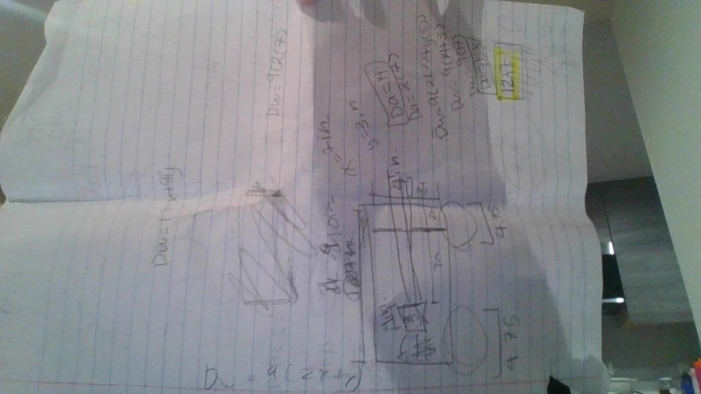Semester 2
Week 5 and 6
1. We learned that one of the flaws in our design was we made the body too big.
The body being too big made our car go slower. For our second car, we will make the
body smaller so it goes faster. Another flaw was a peice of the body was scraping
on to the wheel when it drove, so we qucikly fixed that too.
2. To improve our distance traveled, we are going to make the string longer and
body smaller. By making our body smaller, our car will go father since it'll be light.
The string being longer will help our car go farther.
3. 27ft
4. 35%
So far, we have completed our first car. The process has been going well since me and
my teamate have been working as a team. Next class, we are looking forward to finishing
our car. We need to attach the wheels.
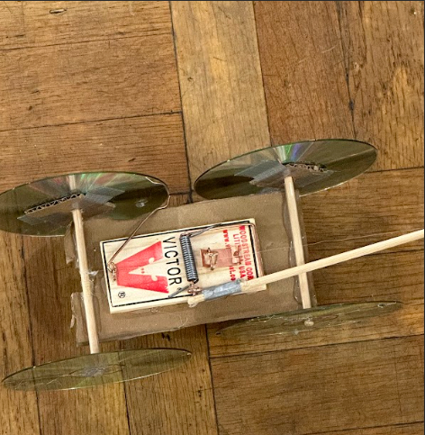
Semester 2
Week 7 2/19-2/23
Testing went good for us since our car went a pretty good distance. We expected
our car to go farther, but the results we got aren't terrible. Our car traveled
around 45 feet. If we had more time, we would improve how stable our car is.
Our car wasn't that stable and the wheels were a little wobbly which could've
had an effect on the distance it traveled. We would also improve how we cut our
car. The sides are messy and it wasn't a clean cut when we cut it. Because of
this, the wheels would scrape onto it and that could be effecting our distance.
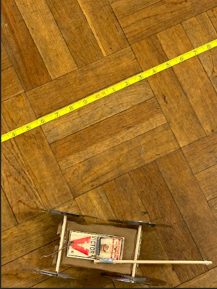 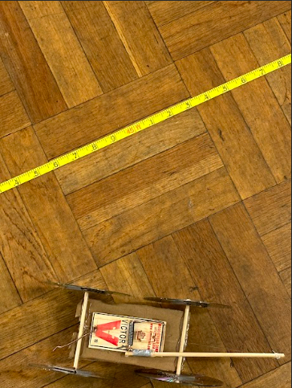Semester 2
Week 8 2/26-3/1
For the egg drop design, we have research various designs to find out the
best one for our egg. We ended up picking a design which is a box with cotton
balls inside and a parashoot. We think this design is going to work because
the egg will fall slow with the parashoot and the cotton balls will be there
supporting the egg. So far, we have built the box and put cotton balls inside.
We finished 1/3 of it last week, we still have to make the parashoot and attach
it. For this week, we are going to built the parashoot and attach it. We will
also make any adjustments if needed. In the argument, my group helped calculate
the number of doors in total. We used a calculator and calculated what we needed
to know. While walking around school, we realized theres a lot of doors in CV,
which includes anything that opens.
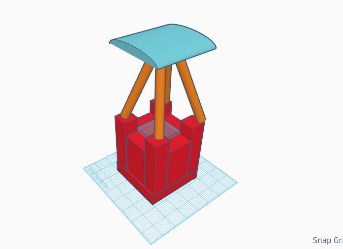